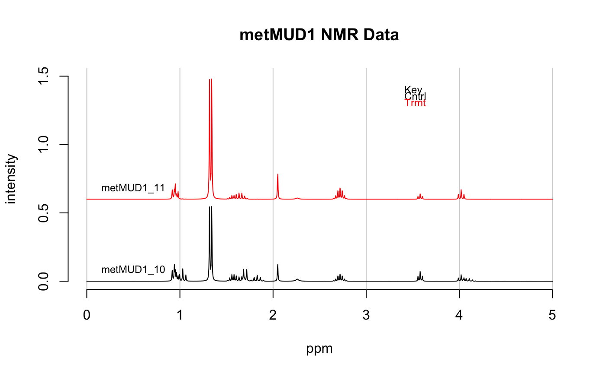

Plots the spectra stored in a Spectra object. One may choose
which spectra to plot, and the x range to plot. Spectra may be plotted
offset or stacked. The vertical scale is controlled by a combination of
several parameters.
plotSpectra(spectra, which = c(1), yrange = range(spectra$data), offset = 0, amplify = 1, lab.pos = mean(spectra$freq), showGrid = TRUE, leg.loc = "none", ...)
| spectra | An object of S3 class |
|---|---|
| which | An integer vector specifying which spectra to plot, and the order. |
| yrange | A vector giving the limits of the y axis desired, for instance
|
| offset | A number specifying the vertical offset between spectra if more than one is plotted. Set to 0.0 for a stacked plot. |
| amplify | A number specifying an amplification factor to be applied to all spectra. Useful for magnifying spectra so small features show up (though large peaks will then be clipped, unless you zoom on the x axis). |
| lab.pos | A number giving the location for the identifying label.
Generally, pick an area that is clear in all spectra plotted. If no label
is desired, give |
| showGrid | Logical. Places light gray vertical lines at each tick mark
if |
| leg.loc | Character; if |
| … | Additional parameters to be passed to plotting functions. |
None. Side effect is a plot.
https://github.com/bryanhanson/ChemoSpec
plotSpectraJS for the interactive version.
data(metMUD1) plotSpectra(metMUD1, main = "metMUD1 NMR Data", which = c(10, 11), yrange = c(0,1.5), offset = 0.06, amplify = 10, lab.pos = 0.5)# Add a legend at x, y coords plotSpectra(metMUD1, main = "metMUD1 NMR Data", which = c(10, 11), yrange = c(0,1.5), offset = 0.06, amplify = 10, lab.pos = 0.5, leg.loc = list(x = 3.2, y = 1.45))